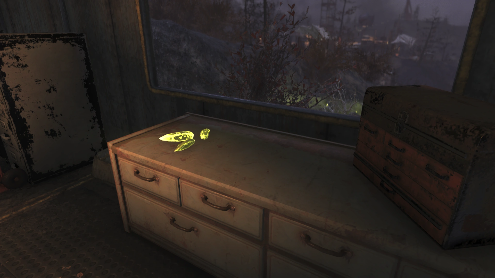
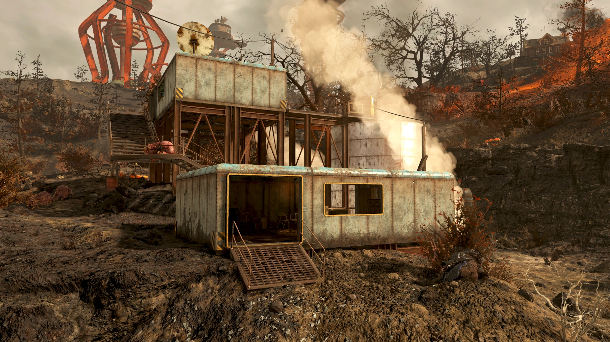
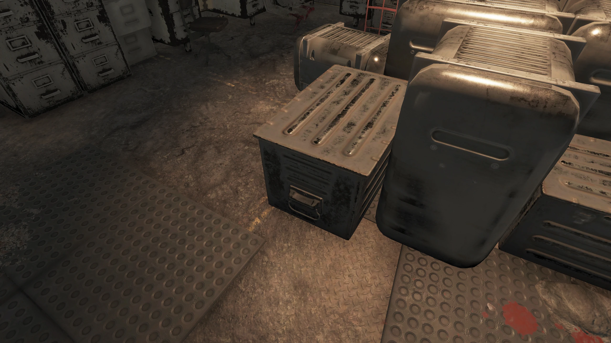
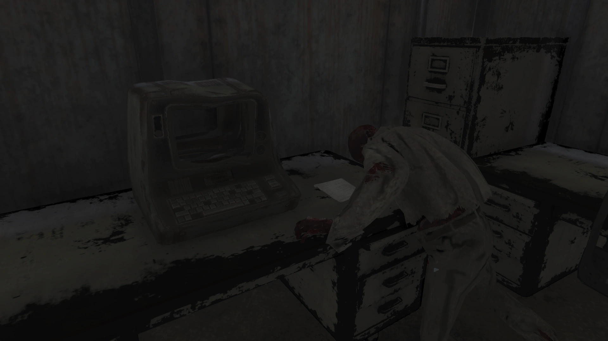
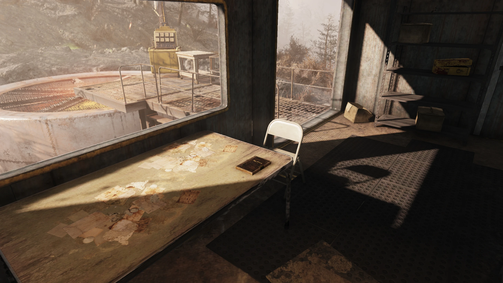
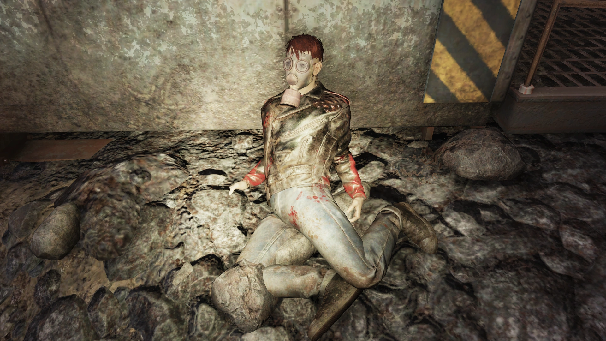

Abandoned Mine Shaft 2
放棄された鉱山坑道2
概要
放棄された鉱山坑道2は、アパラチアの積灰の山地域にあるロケーションである。この場所に核を落とすと、イベント「Seismic Activity」が発生する。
背景
放棄された鉱山坑道シリーズの2番目にあたるこの場所は、大戦発生時にカバーの修理工事中であった。それから数年が経った今も、カバーから放射線が漏れ続けている。
この鉱山坑道は、ジャック・ウッドハウスのような人々による戦後のウルトラサイト採掘の標的でもあった。 しかし、この目立たないロケーションの地下には、はるかに不吉なものが潜んでいた——ウルトラサイト・タイタン、恐ろしく変異したモールラットであり、この鉱山坑道で見つかるモール・マイナーたちと何らかの繋がりを持つ存在である。

この怪物は鉱山坑道の地下に潜んでおり、タイタンに遭遇した者たちは、これを排除するには核が必要だと言っている。
レイアウト
西から入ると、プレイヤーキャラクターはまずコンテナと戦利品が散らばった青いポッドに遭遇する。東側のドアを通って階段を上ると、2番目の青いポッドに到着する。こちらには更に多くのコンテナがあり、検索可能なケミカル・コンテナ2つと追加の戦利品が含まれている。南側のドアは、両方のポッドに隣接する精製所の上部に繋がっている。
Nuka-World on Tourアップデートにより、ウルトラサイト・タイタンの巣であることを反映して、鉱山坑道の周辺にウルトラサイトの結晶が配置された。モール・マイナーもここに出現し、様々なストライクブレーカー・ロボットと戦闘することがある。 アパラチア自動発射システムのMission: Countdownから核を投下すると、核がウルトラサイト・タイタンを動揺させて地上に浮上させ、ヌカワールド・オン・ツアーでイベント「Seismic Activity」が開始される。
注目アイテム
- エアフィルター部品の箱 — クエストアイテム。「What Slept Beneath」中、1階の金属箱内
- ホロテープ — ジャック・ウッドハウスの遺体から入手
- 破れたメモ — 1階のデスクの上（取得不可）
- ウルトラサイト採掘日誌 — 「What Slept Beneath」中、2階のテーブルの上（取得不可）
- フュージョン・コア — 2番目のポッド外のキャットウォーク上
- アーマー設計図（ランダム） — フュージョン・コアのすぐ下
- パワーアーマーMOD（ランダム） — 2番目のポッド内、階段に最も近い金属棚の最下段
関連クエスト
- What Slept Beneath — ピート・マイヤーズからエアフィルター部品の捜索と、巨大な生物——ウルトラサイト・タイタン——の目撃情報の調査のために派遣される
- Seismic Activity（イベント） — この鉱山坑道に核を投下すると開始。ヌカ・ランチャーのジェットコースターで実施される
ホロテープ・メモ
ジャック・ウッドハウスの遺体から入手。声優：スティーブン・ラッセル
マスクが壊れて、ガスが入ってきてるのかと思った……それから、あの臭い。スーツの中で吐きそうになった！ たぶん……あいつを起こしちまった……
鉱石は見つけた。でも叩いたら、岩じゃなくて……肉みたいだった？ それから音が聞こえた、あの音だ……
地震かと思った。あいつを見るまでは。（荒い息）くそ……くそ！ 壁が動いて、口があった。危うく漏らすところだった！ ウルトラサイトがあろうがなかろうが関係ない。
（パニック状態の息遣い）人に警告しないと……すべきか？ 動き続けないと。
あんなもの、あのバケモノに二度と近づくもんか。排除するには核が必要だ！ ここから出ないと。出ないと——
（クリーチャーの絶叫）
ああ、嘘だろ——
1階のデスクの上、血まみれの骸骨の横。取得不可。
あいつの腕を叩くと動きは鈍くなったが、すぐにもっと強くなって戻ってきた
2階のテーブルの上。「What Slept Beneath」中に出現。取得不可。
9月12日 くそ！！ あの鉱石を掘ろうとして丸一日無駄にした。弾丸でも傷一つつかなかった。明日はツルハシか、もっとガツンとくるものを見つけよう。
9月13日 鉱山がかなり揺れている。鉱石の妙な反応と関係があるのかもしれない。昨日より鉱石が増えてる気がする。
9月14日 くそ！ ツルハシが滑った。なんとか傷口を洗った。痛みは耐えられないほどだった。あのケミカル箱の中にサイコがあった。1本くらい大丈夫だ、痛み止めだけで、それで終わりだ。
9月15日 地面が揺れ止まらない。鉱山全体が崩壊しそうだ、くそ。気が狂いそうだ。でも何かが下にいるに違いない。
9月16日 薬が切れた。もう痛みを紛らわすものがない。この場所は精神を蝕む。でもこの結晶？ ウルトラサイト？ 重さ分のキャップの価値がある。今日でかいやつを割って、次に通りかかるキャラバンに売ろう。もう少しマシな装備を手に入れて、この地獄を乗り越えたい……
ヌカワールド・オン・ツアー南西の無名倉庫（old storehouse）、2階の箱内。ガスマスクとアディクトールの下。
7月10日 積灰の山に「ウルトラサイト」って呼ばれる希少鉱石があるって情報を得た。そういうレアものを高いキャップで買ってくれる奴は必ずいる。もし手に入れられたら、十分な物資と交換して、ここから出られるかもしれない。世界を見るんだ！……残ってる世界をな。
7月24日 誕生日おめでとう、俺！ 積灰の山の古い鉱山坑道の情報を見つけた。どこかにあの鉱石があるはずだ！ 古いホロテープも見つけた。鉱山の中に怪物がいるとかいう怪談。地元民を追い払うために作った話だろう。
8月15日 古いレスポンダーの施設から装備をくすねた。これで積灰の山の鉱山に安全に行けるはずだ。ブラッド・イーグルのパトロールとすれ違いそうになった。やつらはキレてた。足跡を消した方がいい。
9月3日 古いルイスバーグに拠点を見つけた。近くに古い鉱山がいくつかあるみたいだ。地元の連中をやり過ごせれば、鉱石を手に入れてとっとと逃げられる。
9月7日 丘の上の鉱山には何もなかった。次に行こう。もう少し先にもう一つある。古い倉庫でレイダーとぶつかった。先に撃って後から質問した。ブラッド・イーグルじゃなかった。気の毒だが、リスクは冒せない。埋めようとしたけどモール・マイナーが巡回してた。放置するしかない。
9月10日 今がチャンスだ。鉱山に向かう。荷物は軽くしていく。ここにいくつか隠しておいて、終わったら戻ってこよう。全部持っていく意味はない。
登場作品
放棄された鉱山坑道2はFallout 76にのみ登場する。
舞台裏
Nuka-World on Tourアップデートでのこのロケーションのセット装飾とリデザインには、Double Elevenのレベルデザイナー、ライアン・キューアの仕事が関わっている。
ギャラリー






一見するとただの放棄された鉱山ですが、地下に潜むウルトラサイト・タイタンという巨大モールラットの存在が、このロケーションに独特の不気味さを与えています。
Nuka-World on Tourアップデートで追加されたウルトラサイトの結晶群が、この場所が「何かおかしい」ことを視覚的に伝える良い演出ですね。
核を落とさないと出てこないボス——というのもFallout 76らしいスケール感です。
この記事は Nukapedia (Fallout Wiki)の「Abandoned mine shaft 2」の記事を日本語に翻訳し再構成したものです。
原文は Creative Commons Attribution-ShareAlike (CC BY-SA) ライセンスのもとで利用しています。
© Bethesda Softworks LLC. Fallout およびすべての関連ロゴ・名称は Bethesda Softworks LLC の登録商標です。
COMMENTS